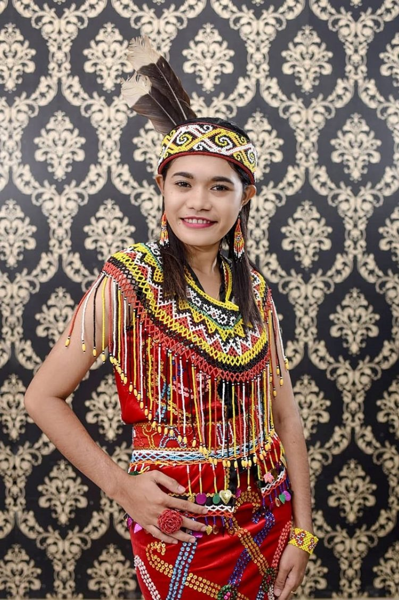
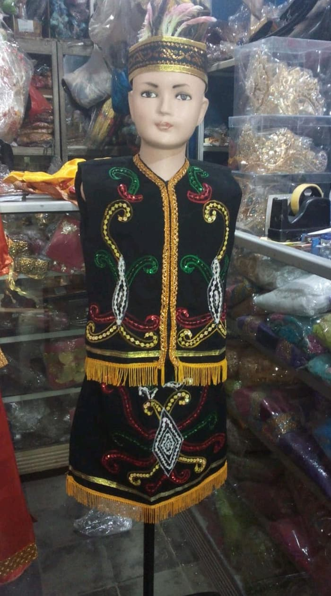
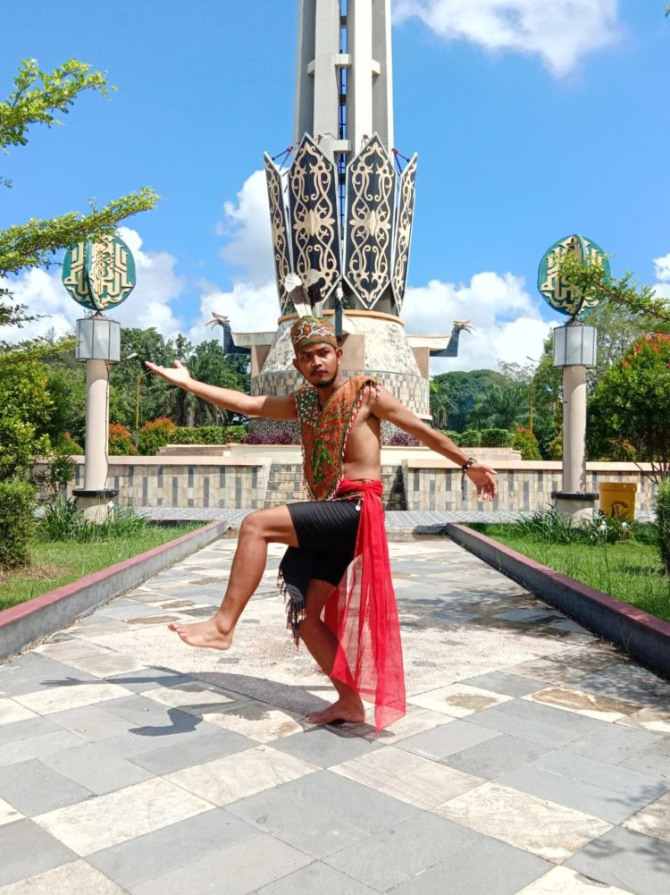

<div id="app">
    <!-- App root element -->

    <div class="view view-main">
        <div class="page stacked" data-name="pakaian_adat">
            <div class="page-content">
                <div class="block hero-budaya">
                    <div class="navbar">
                        <!-- <div class="navbar-bg"></div> -->
                        <div class="navbar-inner">
                            <div class="left">
                                <a href="#" class="back" data-transition="f7-cover-v"><i
                                        class="f7-icons text-color-white">arrow_left</i></a>
                            </div>
                            <div class="title">Pakaian Adat Palangka Raya</div>
                        </div>
                    </div>
                </div>
                <div class="block sejarah konten-budaya">
                    <div class="row deskripsi budaya">
                        <h3>Pakaian Adat</h3>
                        
                        <p>Kalimantan tengah adalah sebuah provinsi yang memiliki kebudayaan yang unik. Salah
                            satunya budaya yang ada hingga saat ini yakni pakaian adat Kalimantan Tengah yang biasa
                            digunakanya ketika ada acara upacara pernikahan dan acara daerah lainnya.</p>
                        <p>Seperti pakaian adat Kalimantan tengah atau yang biasa dikenalnya dengan pakaian adat
                            Sangkarut dengan motif dan bentuk menyerupai rompi. Jenis rompi ini dulunya kerap
                            digunakan sebagai salah baju untuk berperang.</p>
                        <p>Berikut merupakan nama-nama pakaian adat Kalimantan tengah yang terbagi menjadi beberapa
                            jenis diantaranya sebagai berikut :</p>
                        <ul>
                            <li>Pakaian Adat Sangkarut</li>
                            <li>Pakaian Adat Upak Nyamu</li>
                            <li>Pakaian Adat Pawang</li>
                            <li>Pakaian Adat Tenunan</li>
                            <li>Pakaian Adat Anyaman Takar</li>
                        </ul>
                        <div class="block">
                            
                            
                        </div>
                    </div>
                </div>
            </div>
        </div>


    </div>
</div><!-- App root element -->